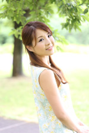

-
監修
パーソナルカラー＆スタイル
いろ結い（いろゆい）代表Kyoko
文部科学省 色彩検定1級
東京商工会議所 カラーコーディネーター検定試験 1級 ファッション色彩
色彩技能パーソナルカラー検定 全モジュール取得
NPO日本パーソナルカラー協会認定 パーソナルカラーアドバイザー
Arianna salon認定 骨格診断アドバイザー
ラピスアカデミー認定 16タイプ・パーソナルカラーアナリスト
ベストカラーコム認定 パーソナルデザイン・イメージコンサルタント
日本顔タイプ診断協会認定 顔タイプアドバイザー1級
日本顔タイプ診断協会認定 顔タイプウェディングアドバイザー
顔分析パーソナルメイクアップ協会認定 顔分析パーソナルメイクアップ®アドバイザー